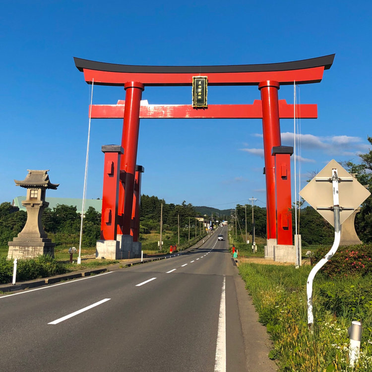
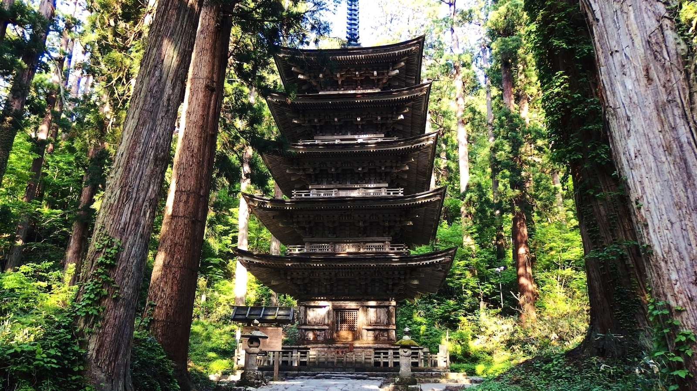
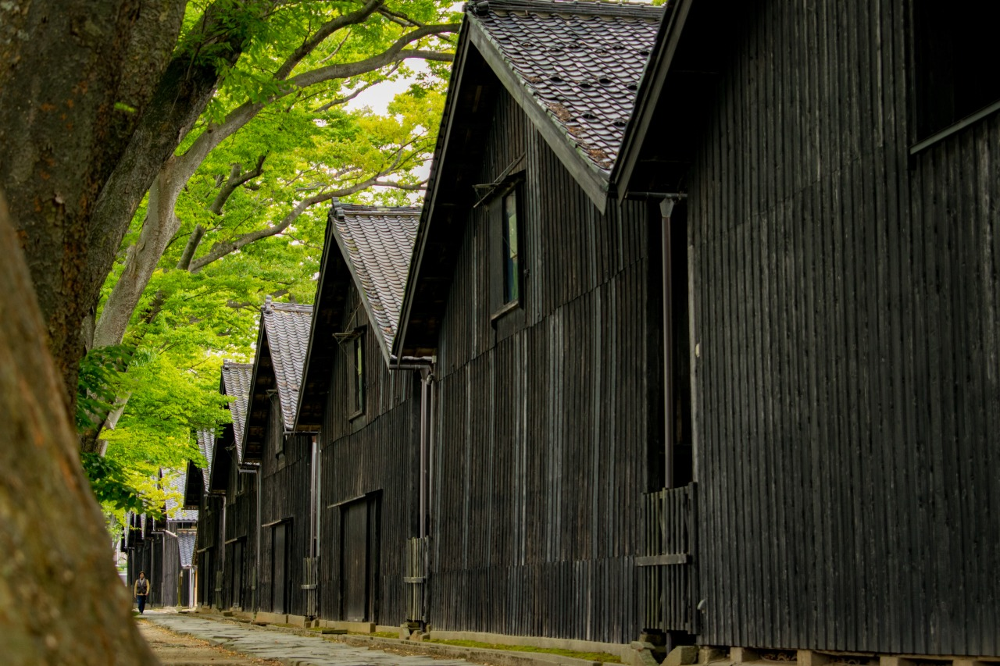

羽黑山
はぐろさん\Mount-Haguro
羽黑山
 「寶珠山立石寺」（以下簡稱山寺）為西元860年，由慈覺大師円仁創建的天台宗寺廟，整座山都是修業與信仰的場地，自古以來流傳著只要到此參拜就能斬斷惡緣的傳說。延伸至山頂的參拜道路，共1,015階石階梯組成，坡度頗大，沿路上還能見到許多大大小小的佛堂與佛塔。
「羽黑山五重塔」位於山形縣鶴岡市羽黑町，是日本東北地區被指定為國寶的最古老的五重塔。此塔設於由月山、湯殿山和羽黑山組成的出羽三山的三神合祭殿的參拜道上，自古受到人們的信奉。
「寶珠山立石寺」（以下簡稱山寺）為西元860年，由慈覺大師円仁創建的天台宗寺廟，整座山都是修業與信仰的場地，自古以來流傳著只要到此參拜就能斬斷惡緣的傳說。延伸至山頂的參拜道路，共1,015階石階梯組成，坡度頗大，沿路上還能見到許多大大小小的佛堂與佛塔。
「羽黑山五重塔」位於山形縣鶴岡市羽黑町，是日本東北地區被指定為國寶的最古老的五重塔。此塔設於由月山、湯殿山和羽黑山組成的出羽三山的三神合祭殿的參拜道上，自古受到人們的信奉。
羽黑山五重塔的歷史十分悠久，據說是在平安中期由平將門建造而成。而現在的塔據說是600年前重建而成的。高29公尺，5層構造的木瓦屋頂，未施加任何顏色的原木構造給人留下了深刻的印象。
羽黑山自古就是山岳信仰的山脈之一。這裡修建有修驗道，即便現在也有很多參拜者前往。
羽黑山景點介紹
羽三山神社大鳥居
 出羽三山以輪迴轉世為根基，繞行三山的行程被稱為「投胎換骨之旅」，因此三座山各代表了現在、過去以及未來。 其中，羽黒山由於最接近人煙鄉里，因此象徵著現在。信者造訪此地來祈求現世的幸福。 羽黑山南方的月山象徵著過去，由於高聳於天際，因此也被認為是萬物祖靈聚集之地。在參拜完羽黑山之後，人們會前往月山祈求死後能夠前往極樂淨土。 象徵著未來的湯殿山位於月山的西方，神域之內不斷湧出泉源的紅色巨岩為神之象徵。在投胎換骨的旅途中，人們最後會來到湯殿山以祈求來世的福份。 修驗者皆認為只要繞行出羽三山，即可脫胎換骨找到全新的自我。
羽黒山五重塔
 羽黑山的最大賣點就是被指定為國寶的「羽黑山五重塔」。 在從隨神門前往羽黒山五重塔的參道兩旁，佇立著無數高大挺拔的古杉樹，其中鶴立雞群的一顆古老杉樹就是國家天然紀念物的「爺杉」，其樹齡超過1000年以上。 「五重塔」為高29公尺的木造建築，相傳最初的五重塔是由1000多年前的武士平將門所創建，而目前的五重塔則於600多年前所重建而成，被視為日本東北地區最古老的塔建築。
山居倉庫

建造於1893年的山居倉庫是了解北前船文化的重要歷史建築之一，是用來當作保管稻米的倉庫，由此建築物撐起了酒田的稻米輸出歷史。
山居倉庫是由9棟白壁、土藏，建築所連結而成，裡頭可以收藏高達10,800公噸的稻米。當初為了解決夏日高溫會影響稻米收藏的情形，於是在倉庫後方種植了一整排高大的櫸樹，這些櫸樹不僅盡到了遮蔽烈日的職務，更成為了代表酒田的象徵性風景。
日和山公園
 瀰漫著北前船文化氣息的地方就是「日和山公園」，裡頭還留有船主們為了祈求出海平安而捐獻的石造燈台、用來確認方位的方角石、日本最古老的木造燈台，以及用1/2比率重現而成的北前船模型。
瀰漫著北前船文化氣息的地方就是「日和山公園」，裡頭還留有船主們為了祈求出海平安而捐獻的石造燈台、用來確認方位的方角石、日本最古老的木造燈台，以及用1/2比率重現而成的北前船模型。